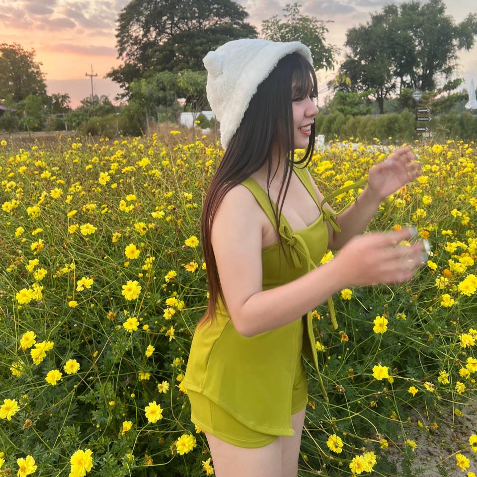
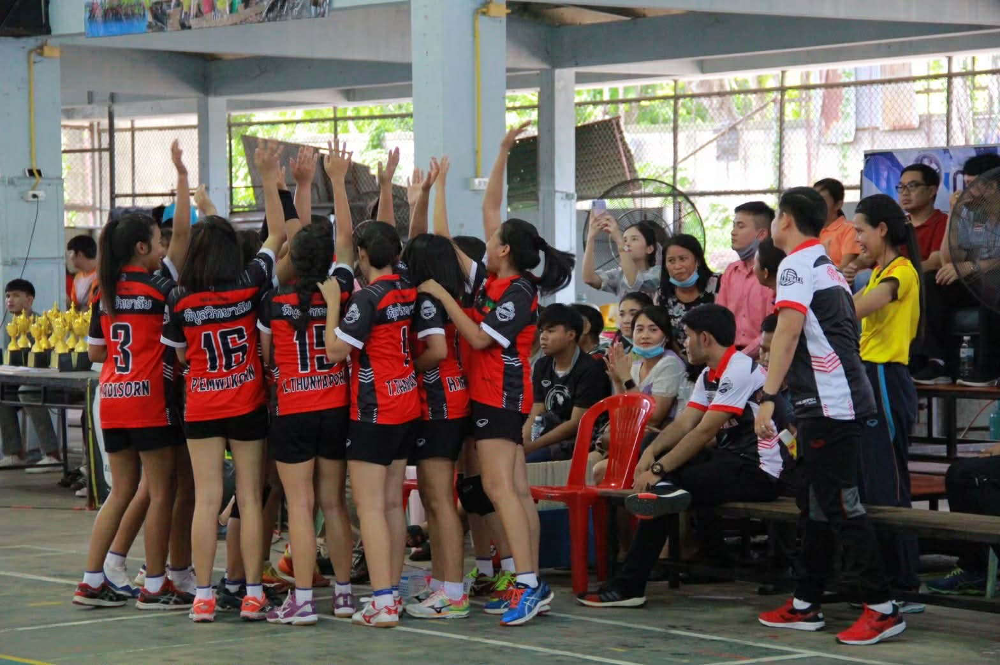

Thunyaporn Lodcham
Personal Portfolio • About Me • Contact
ชื่อ-นามสกุล: ธัญพร รสฉ่ำ (Thunyaporn Lodcham)
รหัสนักศึกษา: 66124630110
Gmail: 66124630110@lawasri.tru.ac.th
เบอร์โทร: 0927106586

งานอดิเรก
เป็นกิจกรรมแข่งขันกีฬาวอลเลย์บอลจังหวะลพบุรีจัดการแข่งขันได้รับรางวัลรองชนะเลิศลำดับ2แข่งขันที่โรงเรียนพิบูลวิทยาลัยเป็นการแข่งขันที่สนุกละมันส์มากได้รู้จักเพื่อนร่วมทีมได้รู้จักทีมอื่นๆอีกมากมาย 💗🐱

สัตว์เลี้ยงที่ชอบ
หนูรักหมามาก ๆ ค่ะ เพราะหมาทำให้ น่ารัก และเป็นกำลังใจเสมอ 💕